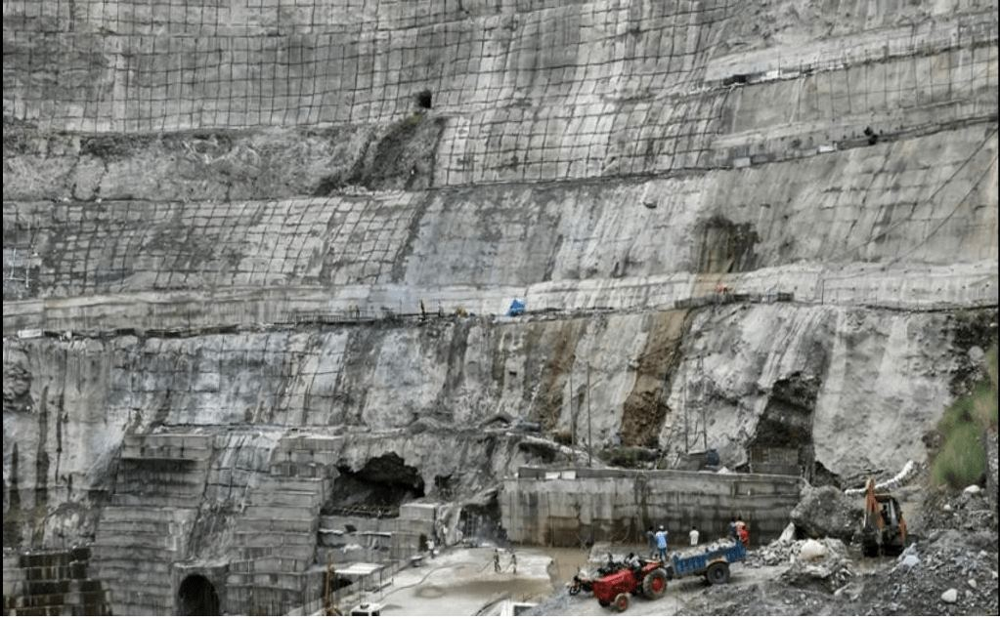
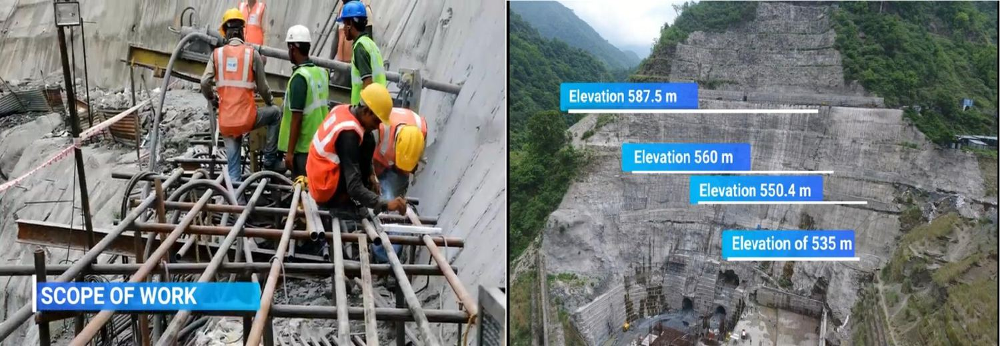
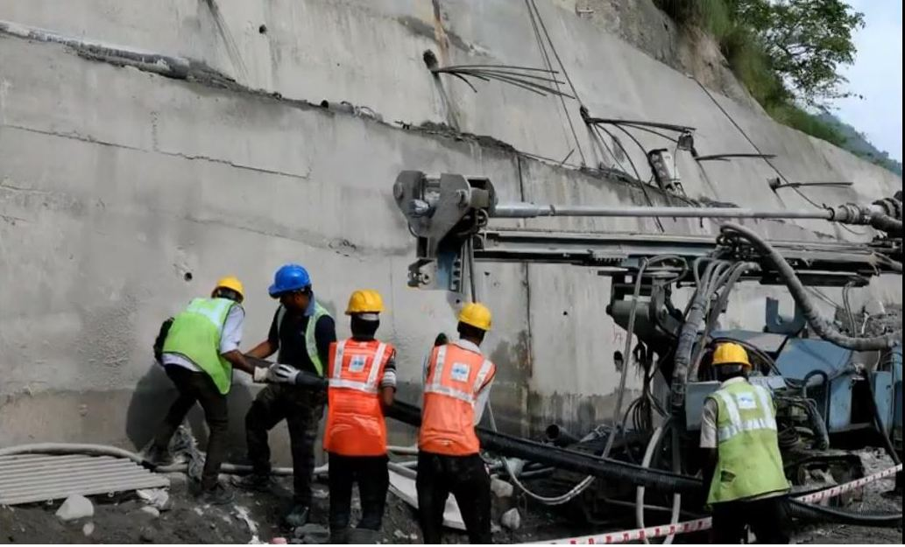

WORK: SLOPE STABILIZATION/ TOE STABILITY PROTECTION
PRODUCTS: Double Corrosion Protection Passive Cable Anchors
Introduction
A 192m high Lakhwad Dam with its 900MW underground power station and 86m high Vyasi Dam situated 5km downstream of the Lakhwad with its 120MW power station at Hathiyari. Our project site was located at the Hathiyari Powerhouse station. The project location comprises of thick overburden of fully disintegrated and small blocks of fragmented mudstone and sandstone rock. Slope profile was a very steep and challenging terrain that passes through NH. Geomorphology, unstable geological conditions required stabilization work for the protection of dam powerhouse and national highway.
Geological Setup
The geological structure of Doon valley (Dehradun) is characterized by two major faults, crustal and fractures along which rock slabs of mountain mass have been uplifted and moved southward. The Doon valley and Shiwalik range, which are classified into the lower, the middle, and the upper Siwaliks. It is composed of grey, salts, and peeper textured poorly to moderately sorted, fine to coarse-grained multistoried sandstones with a subordinate amount of mudstone. Multistory sandstone complex of Middle Shiwalik exhibits vertical faces variation from sandstone –mudstone to sandstone to mudstone –conglomerate. The multistoried sandstone’s very characteristics feature is the repetitive occurrence of selective cementation layers of varying thickness and sharp contacts with the under and overlying friable sandstone.
The Shiwalik belt consists of sandstone and conglomerates, which are often soft and friable. Bands of clay are interceded with this sandstone and conglomerates, giving cohesion to the soil and thereby improving its physical qualities. The soil resulting from the Shiwalik sandstone is a sandy loam, with sometimes a large proportion of clay. In higher regions with steep slopes, the soil is very shallow and dry. Consequently, the vegetation as a whole is more xerophytic. It is, however, deep on northerly aspects and in lower slopes. The best soil occurs on the lowest slopes, where the proportion of clay is large, and the drainage is adequate. But such conditions do not prevail over large areas.

Fig 2: Executing work in steep slope terrain at site.
Site problem
The main disturbing factor was the presence of weak rock formations of high rise hilly terrain. Topsoil or rock comprises highly weathered mudstone, sandstone including sand layer sandwich between two highly weathered formations and effect of rainfall liquefied the layers, thereby creating large mass movements. The increase of Pore water pressure during monsoon season created the loss in shear strength of the sandwich soil layer and particularly along the weak zone. Constant seepage unbounded the stratified particles resulted in the sinking of overlying loose particles and created an increase in dilation under normal stress conditions: this ultimately created settlement and mass movement problems.
Solution
Spar Geo Infra Pvt. Ltd. had been awarded the work for the execution of the installation of high capacity Cable Anchors at Hathiari Power Station region. Geo Spar did the complete work on cable anchors that were designed as per BS 8081, and the ground anchors were subjected to proving test, suitability test, and on-site acceptance test.
Preparation of approach & Platform for drilling of Cable Anchors
The presence of 4-5m unstable overburden caused a major hindrance for the preparation of stable surface required for drilling of holes. Stabilization works were done at different elevations for the whole unstable profile. At EL+587.5m, NH was passing stabilized with a 6m high cladding wall with cable anchors, likewise level below this up to EL+560m also protected with the same design section as the level above the geotechnical design analysis. Elevations 550.4m and 535m stabilized with 4m height of cladding wall and double corrosion passive cable anchors. The slope is protected using a 311 number of DCP Anchors at different elevations in a total stretch length of 365m.

Fig 3: Platform preparation for installation of anchors. Fig 4: Execution works at different elevations of site.
Fractured rocks conditions poised drilling difficulties
During drilling, fractured and fragile rocks were encountered at various drill depth intervals, which were always a threat for DTH hammer and bits getting stuck.

Fig 5: Typical view of manpower were engaged to installation of the cable anchor.
Passive Cable Anchors was big & bulky
The cable anchors of 900kN capacity with the length of 15m to 30 meters were weighing 450kgs each, and there was no way to mechanically carry these anchors to the designated locations; means to different elevations from fabrication yard.
Stressing of Cable Anchors
Speed of work being the essence of the project, it was required to carry out the cable anchors at very fast pace. But the stressing of these cable anchors was not possible until grout achieved a strength of 35mpa. Stressing of these installed cable anchors at such height and space constraint was again a challenge. Difficulties were faced for the installation of bearing plates and stressing jacks for stressing activity. The challenge was overcome by using hydraulic cranes of suitable capacity for the job.
Cable anchor Installation Process
A pre-stressed grouted cable anchor is a structural element installed in soil or rock, which is used to transmit an applied tensile load into the ground. Pre stressed ground anchors act against the potential slip surface’s thrust and increase the normal stress on the potential slip surface. Both of these actions contribute to an increase in the stability of the slopes. Anchored slopes and landslide stabilization systems are designed to restrain forces associated with unstable ground masses.
Fig 6: Typical view of tensioning of cable anchor
Process of Prefabrication and Transportation
Number of strands combined together to form anchor on which various accessories such as sheathings for free length, injection pipe to provide grout around anchor periphery, centralizer, etc. Depending upon the type of application and environmental conditions accordingly, corrosion protection measures are used for anchors to increase its effectiveness.
Drilling
Generally, the hole diameter varies b/w 50 to 200 mm, which is commenced using drill tools. Drill direction and angle is selected based on stresses generated from structure and ground interaction.
Fig 7: Typical view of cable anchor drilling process at site location.
Installation of Anchors and Grouting
Designed anchor diameter are placed in the drilled hole. Before placing anchors, the drill hole is flushed with compressed air to remove any loose material inside the hole. After placing anchors, grouting is done to provide a bond between ground, surrounding strata, and anchors. Grout application also stabilizes the drill hole and fills the void spaces, if any.
Stressing/ Tensioning
Stressing of pre-stressed anchors carried out at 1 to 7 days after injection of grout depending on the type of ground and the grouting compound used and its designated strength achievement.
Protection
Appropriate material like grease, wax, and cement grout is used to provide corrosion protection. The metal parts such as anchor head are also treated against corrosion protection materials according to environmental conditions.
Fig 8: Complete installation of ground double corrosion protection passive cable anchors at site.